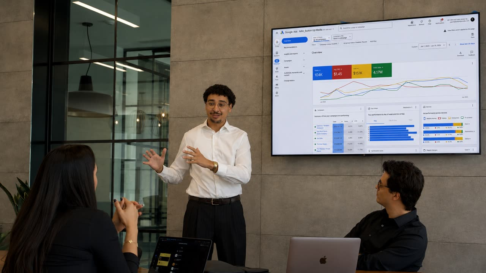

Google Ads and Meta ads for restaurants
Button Up Media runs Google Ads and Meta ads (Instagram and Facebook) for restaurants, so you show up when diners are deciding where to eat. Every campaign is built around calls, reservations, online orders and private-event inquiries. We're headquartered in Miami, FL, and we run ads for restaurants anywhere in the US.
We run Google Ads and Meta ads for restaurants anywhere in the US, so you show up when diners are deciding where to eat.
- No long-term contracts
- Full conversion tracking
- Built for restaurants

Results from restaurant accounts we manage
These numbers come from Google Ads campaigns we managed for restaurants in 2025.
2025 results across 5 restaurant properties
- Tracked conversion value$1.1M
- Tracked conversions2,600+
- Blended ROAS24:1
- Total ad spend<$46K
What ROAS means
ROAS means return on ad spend: how many dollars come back for every dollar you put into ads. A 24:1 ROAS means about $24 back for every $1 spent.
Across the five accounts below, every $1 of Google Ads spend in 2025 came back as about $24 in tracked conversion value.
Some of the restaurants behind these numbers


Results by account
Google Ads results from 2025. Tap an account to read the case study.
- The BoathouseLandmark waterfront restaurant · Private events, branded search · May to Dec 2025 · $7,157 ad spend 72:1ROAS 234Conversions $520KConv. value $30.58Cost / conv. The highest ROAS of the five accounts. Paying $30.58 for a private-event lead is a very good deal when each booked event brings in thousands in revenue.
- The OdysseyUpscale fine-dining restaurant · Dinner reservations, private events · Jun to Dec 2025 · $6,802 ad spend 49:1ROAS 951Conversions $337KConv. value $7.15Cost / conv. At $7.15 per conversion, the targeting is well tuned and the account can take more budget.
- Rusty Pelican MiamiLarge waterfront restaurant · Reservations, private events, seasonal · Full year 2025 7:1ROAS 1,007Conversions $135KConv. value $18.95Cost / conv. Holiday results: Mother's Day brought in 155 conversions at $3.06, and Thanksgiving brought in 252 at $3.70.
- Rusty Pelican TampaLarge waterfront restaurant · Reservations, private events, seasonal · Aug to Dec 2025 27:1Events ROAS 287Conversions $87KConv. value $23.64Cost / conv. Holiday results: Christmas and Thanksgiving were the strongest campaigns.
- CastawayLarge bar & restaurant · Reservations, private events · Mar to Dec 2025 · $5,926 ad spend PositiveROAS 140Conversions $17KConv. value $42.34Cost / conv. Both campaigns had a positive ROAS, and private events are ready for more budget.
Read the case studies: private events at The Boathouse, The Odyssey and Castaway, and Rusty Pelican Miami and Tampa.
See all case studiesWhat restaurant owners say on Google
5.0“…They helped me build a beautiful, easy-to-use website that truly represents my brand. They also got me started with social media, set up and managed my Google Ads, and gave me a solid foundation when I felt completely overwhelmed. … Thanks to their work, not only did my restaurant grow locally, but I was able to open a second location! …”
“Working with Button Up Media has been one of the best investments I've made for my business. … On top of that, they're now managing our Google Ads campaign, and I'm excited to continue growing with their team. …”
Why paid media works for restaurants
Most restaurant customers fall into one of two groups. Knowing which group you're paying to reach makes a big difference in what your ad budget brings back.
People browsing
They're scrolling social media and see your restaurant in passing. They might think of you later, but they aren't deciding where to eat right now.
People ready to book
They're typing "Italian restaurant near me" into Google, checking Maps and comparing a few places. They'll pick one within minutes.
Search ads put your restaurant in front of the second group, people who are already choosing where to eat tonight.
You can see what your ad money brought in
Print, radio and billboards can't tell you whether anyone booked a table because of them. With paid ads, you can see:
- Exactly how much was spent
- How many people saw the ad
- How many clicked and then called, booked or ordered
- How many reservations or inquiries were generated
That means you can judge your ads by the revenue they bring in.
Why most restaurant ads underperform
In most cases the problem is how the campaign was set up. Many restaurant campaigns are launched without a clear goal or conversion tracking, so the budget gets spent without bringing in reservations or event leads.
-
01
Boosted posts
Boosting a post feels like advertising, but usually it just shows the post to a slightly bigger audience.
-
02
Campaigns nobody is watching
The budget gets spent every day, and nobody knows which clicks are bringing in revenue.
-
03
Agencies that don't know restaurants
Many general agencies run restaurant ads the same way they run ads for roofers or med spas.
How we set up restaurant campaigns
Before we launch anything, we work out three things with you.
-
01
Who the customer is
It could be couples planning a date night, companies planning an event, or tourists searching "best seafood near me."
Each group gets its own campaign, with its own keywords and ads.
-
02
What we want them to do
Usually that's booking a table, sending a private-event inquiry or calling the restaurant.
Each campaign is built around one of these actions, so it's clear what's working.
-
03
What success looks like in dollars
We measure campaigns by the revenue they bring in.
- Revenue brought in compared with ad spend
- A ROAS report every month
- A clear view of which campaigns are working
Paid media services
These are the five types of campaigns we run for restaurants. They all follow one plan, and we track what each one brings in.
-
01
Google Ads for restaurants
Someone searching "restaurants near me" is deciding where to eat right now. Google Ads can put your restaurant at the top of that search.
-
02
Facebook & Instagram ads
Instagram and Facebook ads reach people before they start searching. We target locals by location, dining interests, age and behavior, so your restaurant is already on their mind when they decide where to go.
-
03
Local discovery & Maps advertising
Maps ads put your restaurant near the top of Google Maps results. For restaurants that depend on walk-in traffic, this is one of the channels with the best return.
-
04
Retargeting campaigns
Most people don't book the first time they see you. Retargeting shows your ads again to people who already visited your website, watched your videos or engaged with your ads, to remind them to come back and book.
-
05
Promotion & event campaigns
Holidays and seasonal events bring some of the best conversion rates of the year. We build a separate campaign for each one and launch it early enough to reach people who plan ahead.
How we run your ads, step by step
- 01
Audit & strategy
We learn your goals, review any campaigns you already run and plan where your budget should go first.
- 02
Campaign build
We handle keyword research, audience targeting, ad copy, creative, conversion tracking and making sure each ad leads to the right page.
Nothing launches until tracking is verified.
- 03
Optimization
We check campaigns daily, adjust bids, pause ads that aren't working, test new versions and move budget to what brings in the most.
- 04
Monthly reporting
Every month you get a report with impressions, clicks, conversions, cost per conversion, conversion value and ROAS.
The report shows what brought in revenue and what didn't.
Typical monthly ad budgets for restaurants
A bigger budget gets you more clicks, but how well the campaign is run decides what comes back. A poorly managed $5,000 campaign can lose money, while a well-run $1,500 campaign can bring in a solid return.
-
Independent / single location
$500 to $2,000/mo
A single location focused on reservations, local search and a steady flow of event inquiries.
-
Multi-location Most common
$2,000 to $5,000/mo
Several locations, each with its own targeting, budget and reporting, under one plan.
-
Hospitality group
$5,000+/mo
Larger or upscale venues with private dining, busy seasons and big growth goals.
On the call, we'll look at your market, estimate what your keywords will cost and project a likely return before you spend anything on ads.
Frequently asked questions
Common questions about restaurant ads and working with Button Up Media.
Do Google Ads work for restaurants?
Yes. Google Ads reach people who are searching for a place to eat or book right now. With conversion tracking and local targeting set up properly, they usually bring in the most ready-to-book reservations and event leads of any channel.
Can you run ads for a restaurant outside Miami?
Yes. We run Google Ads and Meta ads for restaurants anywhere in the US, with the same service and the same quality of work. We're headquartered in Miami, FL. Rusty Pelican Tampa is one of the five accounts on this page.
Do you run Instagram and Facebook ads too?
Yes. Meta ads cover both Instagram and Facebook, and we run them alongside Google Ads. We use them to reach locals before they search, promote events and retarget people who already visited your website or watched your videos.
Should restaurants use Facebook Ads or Google Ads?
Most restaurants do best with both, because they do different jobs. Google reaches people who are already searching, while Facebook and Instagram reach locals before they search. We put more of the budget into whichever one fits your main goal.
What is the best way to advertise a restaurant?
Usually a mix. Google Ads reach diners who are ready to book, Maps ads help you show up in local searches, and Meta ads with retargeting keep your restaurant in front of locals before and after they search. The right mix depends on your goals, your market and your busy seasons.
How much should a restaurant spend on advertising?
Most independent restaurants start at $500 to $2,000 a month, multi-location restaurants at $2,000 to $5,000, and hospitality groups at $5,000 or more. How well the budget is managed matters more than its size: a well-run $1,500 budget can outperform a poorly managed $5,000 one.
What does ROAS mean?
ROAS stands for return on ad spend. It's how many dollars come back for every dollar you put into ads, so a 24:1 ROAS means about $24 back for every $1 spent. Across the five restaurant accounts on this page, the blended ROAS for 2025 Google Ads was 24:1, based on tracked conversion value.
How do you track restaurant advertising ROI?
We set up conversion tracking for calls, reservations, form fills and online orders. Every month we report the revenue those conversions brought in compared with what you spent (ROAS), instead of judging ads by impressions or likes.
How quickly will I see results?
Search ads start showing as soon as the campaign launches, so they can bring in calls and reservations sooner than SEO or social media. We only launch after conversion tracking is verified, then keep improving the campaigns as we learn what works in your market. How fast depends on your market, your budget and the season.
Can you manage advertising for multiple locations?
Yes. We manage restaurant groups with several locations. Each location gets its own targeting, budget and reporting, while the branding and the overall plan stay consistent across all of them.
Who owns the ad account?
You do. Your ad accounts, campaigns, audiences and conversion data belong to you, and you keep all of it if you ever stop working with us.
Do you require a long-term contract?
No, we don't require long-term contracts. If you want to find out first whether paid ads make sense for your restaurant, start with a free 30-minute strategy call with Juan, our co-founder.
What makes restaurant advertising different from other industries?
People decide where to eat quickly and close to where they are, and demand changes a lot with seasons and holidays. That's why restaurant campaigns need to be planned around reservations, events, time of day and local searches. Many agencies reuse the same lead-generation setup they use for other industries, and it doesn't fit restaurants well.
What's the difference between paid ads and organic marketing?
Paid ads start bringing in traffic the day they launch and reach people who are already searching, so they work best for reservations, events, promotions and quick revenue. You pay per click and control the budget, targeting and timing. Organic marketing (SEO and social media) builds over months and grows into long-term visibility, loyalty and brand recognition. A good plan uses paid ads for revenue now while organic marketing grows over time. See our social media marketing and website design pages for the organic side.
Are paid ads right for my restaurant?
Paid ads work best when there's something specific to promote. They're a good fit if you want more reservations, events or orders soon, if boosted posts or DIY ads haven't worked for you, or if you're already spending on ads and don't know your return. They also help if you have seasonal events, private dining or promotions to fill. We work with independent restaurants, multi-location groups and upscale venues.
See If You're a FitLet's talk about your restaurant's ads
In 2025, five restaurant properties we manage brought in $1.1M in tracked conversion value on under $46K in ad spend. Book a free 30-minute strategy call with Juan, our co-founder, and we'll show you where the opportunities are in your market.
- No long-term contracts
- Full conversion tracking from day one
- You own your campaigns and data
- Restaurants anywhere in the US